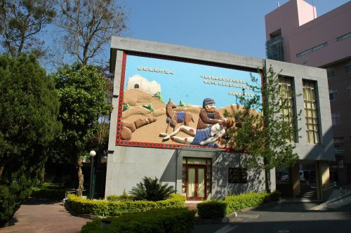

基督教醫院
1946年，烏牛欄教會青年開始與彰基醫師、護士前往霧社醫療、傳道，是為埔基的萌芽。
1955年10月，由芥菜種會 美籍宣教師孫理蓮博士及謝緯醫師共同創辦「基督教山地診所」，並於1956年1月16日舉行開幕感恩禮拜。當時有挪威籍宣教師徐賓諾護理師及隨後成為夫人的紀歐惠醫師配搭事奉，加上世界展望會的協助，於鯉魚潭畔設立肺病療養院，開始展開埔里的醫療宣教工作。當時服務對象以原住民病患為主。
西元1960年8月埔里 基督教山地醫院門診大樓完工啟用。是南投縣第一所設備新穎的現代化醫院，象徵台灣原住民醫療新的里程碑。1999年921大地震，舊醫療大樓仍被上帝保守，成為歷史見證，繼續持續著大埔里地區百姓醫療傳道的需要。西元2002年6月為重新建造耐震新醫療大樓。拆除部分舊建築，保留中間極具意義的舊教堂部分，於同年10月舉行遷移禮拜，將它移至小教堂旁邊，使成為埔基的院史館。(資料來源：埔基網站)
《說明》
「事奉」這複合動詞，一方面讀起來比較鏗鏘順口；另方面又包含恭敬之意，即存恭敬之心去承擔責任，去盡當盡的任務。